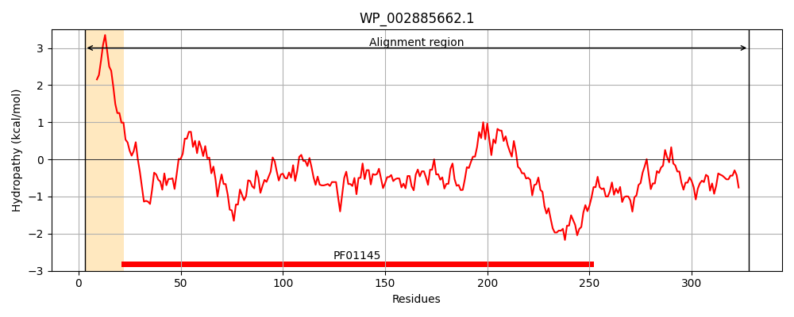
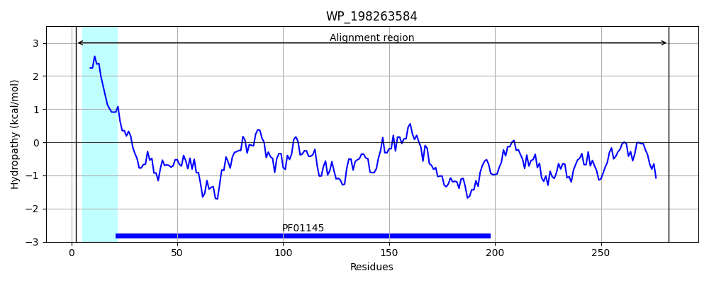
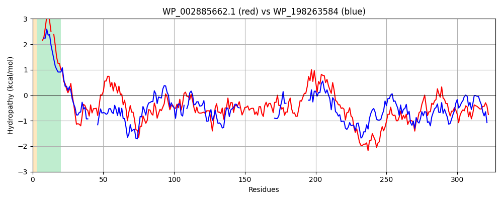

Hit Accession: WP_198263584
Hit TCID: 8.A.21.1.4
Hit Description: gnl|BL_ORD_ID|22093 gnl|TC-DB|WP_198263584.1|8.A.21.1.4 protease modulator HflC [sulfur-oxidizing endosymbiont of Gigantopelta aegis]
Mach Len: 327
e:0.000000
Query TMS Count : 1
Hit TMS Count: 1
TMS-Overlap Score: 0.850000
Predicted Substrates:None
BLAST Alignment:
Score: 523 , Bit scores: 206 bits, E-value: 9.1e-65, Alignment length: 327, Percentage identity: 35
Query: 3 KSVIAIIVIVLVVL-YMSVFVVKEGERGITLRFGKVLRDDENKPLVYAPGLHFKIPFIESVKMLDARIQTMDNQADRFVTKEKKDLIVDSYIKWRISDFSRYYLATGGGDVSQAEVLLKRKFSDRLRSEIGRLDVKDIVTDSRGRLTLEVRDALNSGSAGTEDEVSTPAADDAIAKAAERVEAETNGKVQVINPNSMAALGIEVVDVRIKQINLPAEVSEAIYNRMRAEREAVARRHRSQGQEEAEKLRATADYEVTKTLAEAERQGRILRGEGDAESAKLFADAFSQDPGFYSFIRSLRAYEKSFQSNQDVMVLSPDSDFFRYMRS 328
K ++AI V++L ++ S+F V+E E I ++GK+ R D Y PGLHFK+PF+ +V+ D RIQT D + + ++T+EKK L+VDS+I+W+I+D ++Y++ G D+ A+ + + LR+E GR ++ ++++ R + D I K+A + + A G+ +VDVRIK+I P +VS I+ RM ER +A+ R+QG E A K+ A AD +VT A+A ++ +RG+GDA++++++A A+ ++ F++F RSL AY+ +F S DVMV+ PDSDFF Y ++
Sbjct: 2 KLLVAIAVLILGIIGSASMFTVQETEAAILFKWGKIERSD------YQPGLHFKLPFVNNVRKFDKRIQTFDAKPEDYLTEEKKILVVDSFIQWQINDVKKFYVSMRG-DMDIAQERIATIVKEGLRNEFGRRNMYEVISGERHVIM------------------------DDINKSANK---------------DVTAFGVRIVDVRIKRIEFPPKVSNKIFRRMETERTRIAKELRAQGNESAAKITAEADRQVTILKADAFKEAEQVRGKGDAKASEIYATAYGKNKEFFTFYRSLNAYQNTFGSASDVMVMEPDSDFFNYFKN 282 | Protein Hydropathy Plots: |
|---|
|  |  |
Pairwise Alignment-Hydropathy Plot:
|
|---|
|  |